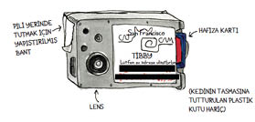
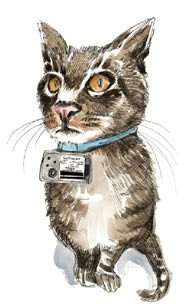
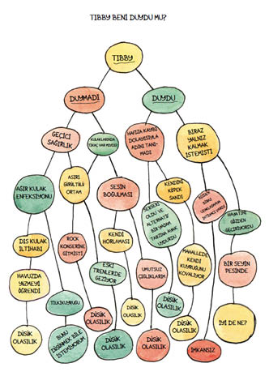
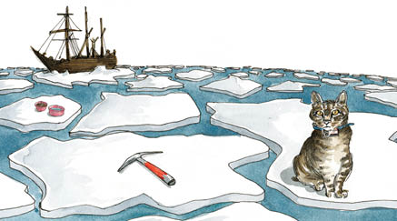
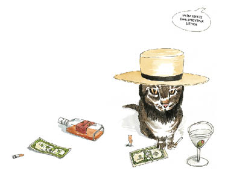
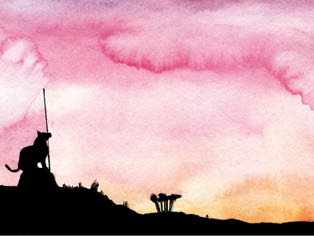
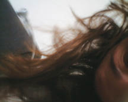
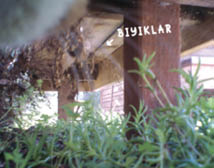
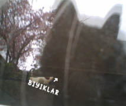

7
Çıktısını aldığım ve o anda masanın üzerinde önümüzde yayılı halde duran GPS haritaları yığınını işaret ederek, “Faydası yok,” diye sızlandım.
Wendy, “Bence var,” diye cevap verdi. “Utangaç, kaygılı, yalnızca seninleyken mutlu olabilen Tibby’nin bu kadar hareketli bir sosyal yaşamı olmasını çekemiyorsun, hepsi bu.”
Evet.
“Hayır,” dedim. “Bana kalırsa gerçek kanıtlar görmeliyiz. Harita üstündeki çılgın çizgiler yetmez.”
“Kedi kamerası diye bir şey yok ki,” diye burnunu çekti Wendy.
Ah, ama var, hem de nasıl.
KediKam küçük, dolgulu bir zarfın içinde ulaştı. Gri ve küçücük bir şeydi, sanki bodrum kattaki bir atölyede kabaca birleştirilmiş gibi görünüyordu ki, internet sayfasında anlatılanlara bakılırsa öyleydi zaten. Talimatlar Almanca ve İngilizceydi; yeni cihazın Schnellstart edilmesi konusunda tavsiyede bulunuyordu.Uzunca bir süre cebelleştikten sonra kamera hazır oldu, dakikada bir tane olmak üzere yüz fotoğraf çekmeye ayarlanmıştı. Bu da iki saatten az görüntüleme zamanımız olduğu anlamına geliyordu ki, hiç kuşkusuz faili suçüstü yakalamak için bu kadarı yeterliydi. Fotoğraftan dik dik bana bakan kocaman bir çehre hayal ediyordum, elinde tonbalığı konservesi vardı. Veya belki utangaç, masum Tibby ile mama kasesini paylaşan başka bir kedinin tüylü sırtını görürdüm.
Paylaşan ve kimbilir başka neler yapan.

Avımızı güneş ışıklarının altında şekerleme yaparken bulduk. Biz yaklaşırken tek gözünü açtı. Yine bir abartılı övgüler korosu yankılandı, masum yüz ifadeleriyle müsamere oynandı. Ağır çekim hareketlerle yaklaşıldı. Yeni teknolojik cihaz bu defa da hiç sorun çıkmadan takıldı. Ancak bu sefer Tibby biraz şaşkın görünüyordu. Bu da ne? diyordu bakışları. Ne tür saçma bir fikre kapılıp da bu şeyi sakarca boynuma tutturdun ki? Bir tur daha, tatlı sözler ve boş vaatlerle dolu üzüntümüzü belirten cümleler sarf ettik. Ah, Tibby. Zavallı Tibbycik. Cici kedi Tibby.
Tibby burnundan soluyarak merdivenlerden aşağı indi. Kuyruğu gözden kaybolurken, bir kez daha, “Şimdi ne yapıyoruz?” diye sordum.
Wendy, “Bekliyoruz,” diye cevap verdi.
Wendy yarım saat sonra alt kata indi. Tibby kanepede yatıyordu. Fibby de yakında, bir sandalyenin üstündeydi. Kamera tıkır tıkır çalışıyor, dakikada bir fotoğraf çekiyordu. Zamanımız daralmıştı.

Wendy, “Tibby’yi dışarı çıkarırsam deneyi bozar mıyım?” diye seslendi. Bu sorunun cevabının hayır olduğuna karar verdik.2
Wendy, Tibby’yi kucaklayıp arka bahçeye götürdü, “Hadi bakalım, sarışın bombanın yanına git,” dedi. Ondan sonra kendimizi günümüzü normal şekilde sürdürmeye zorladık. Yapabileceğimiz her şeyi yaptık diye mantık yürüttük. Bundan sonrasını kameraya bırakmak zorundaydık.
Günüm, bacağımı havaya kaldırmış vaziyette kanepede yatarken, Tibby’nin nereye gittiğini düşünmekle geçti. Kedilerin bölgeleri olduğu söylenmişti bana, bazen bu bölgeler çok geniş oluyordu. Tamam, GPS bu tezi desteklemiyordu. Haritalar Tibby’nin tıpkı tahmin ettiğim gibi genellikle sokağımızın çevresinde dolandığını gösteriyordu. Aslında uyuşturucu almış bir kedi yavrusu gibi koşturuyordu demem gerekir. Ama arada sırada pembe bir çizgi caddenin karşı tarafına geçiyordu.
GPS’nin özellikle kentsel bir çevrede “anormallikler” gösterebileceğini biliyordum. Burada uydu sinyalleri yüksek binalardan, dar arka sokaklardan, sık bahçe çitlerinden, hatta Tibby’nin öne çıkardığı çenesinden bile sekerek karmakarışık hale gelebilirdi. Caddeden karşıya geçiş çizgilerinin sebebi bu muydu? Yoksa Tibby gerçekten de iki sokak öteye, belki daha da uzağa gidiyor muydu?
İki arada bir derede kalmıştım. Bir yanım Tibby’nin yakınlarda kalmış olmasını istiyordu. Ama bunun anlamı, onun beş hafta boyunca ortadan kaybolmasının yanı sıra çılgınca çağrılarımı duymazdan gelmiş, yani bana aldırmamış olmasıydı. O nedenle de diğer yanım onun uzaklaşmış olmasını istiyordu. Her gece, komşularımı kendimden nefret ettirene kadar, “Tibby! Tibby!” diye şakımıştm. Yalvaran çığlıklarımı duysa, Tibby mutlaka dönerdi.
Mantık: Ama dönmedi.
İnkar: Beni duymamıştı da ondan. Yani uzakta, sesimin yetişemeyeceği bir yerdeydi.
Mantık: Ama GPS öyle bir şey göstermiyor.
İnkar: Dur bir dakika. Yakındaydı, ama bir yere kısılıp kalmıştı. Evet, birinin evinde tutsaktı, oradan ayrılamıyordu.
Mantık: Peki geri döndüğünde neden o kadar sağlıklı ve mutlu görünüyordu?
İnkar: Her neyse, o zaman gittiği yere gitmiyor artık. Zaten orası, şey, çok uzaktı.
Mantık: Ama burada yemek yemiyor. Başka bir yerde yediği anlamına gelmez mi bu? Tanıdığı bir yerde? GPS’in kaydettiği bir yerde?
İnkar: Hayır.

Benim de kendi anormalliklerim, pembe çizgili umutlarım, kırgınlıklarım ve varsayımlarım olduğu ortaya çıkmaya başlıyordu. Kimse beni suçlayamazdı. Birlikte on üç yıl geçirmiştik! Güzel yıllardı, en azından ben öyle zannediyordum. Okşamayı, fırçalamayı, temiz suyu, kanepede bir köşeyi, yatakta bir yeri, kalbimden bir parçayı da içeren on üç yıllık bakım bir anda öksüz kalmıştı. Böbrek sağlığı, parlak tüyler, güçlü tırnaklar, kilo kontrolü, idrar yollarının korunması, beyaz dişler, ıslak bir burun, dik kulaklar ve düz bir kuyruk vadeden on üç yıllık mama artık yenilip yutulmaz hale gelmişti. On üç yıllık sevgi hiçe sayılmıştı.
Neden?
Belki Tibby de Ernest Shackleton gibi dünyayı keşfetmeye karar vermişti. Shackleton’ın maceralarının, buza diktiği bayrağın, şövalyelik andının, şöhretinin, zaferlerinin, yazılan çeşitli biyografilerinin ve bir yığın filminin kedicik versiyonu yok muydu? Aşacak kıtalar, tırmanacak dağlar, ve bütün zorluklara rağmen, sonunda Tibby’nin koca kafasının güçlü, kendinden hoşnut ve muzaffer görüneceği bir şeref listesi yok muydu?

Veya belki de Tibby vadesi çoktan dolmuş bir rumspringa dönemi için kedicik tohumlarını ekmekle meşguldü. Tıpkı Amish bir yeniyetme gibi, başka hayatlar aramak için kendisini uçsuz bucaksız dünyaya atmış, ama kâfirce günahların zannettiği kadar eğlenceli olmadığını fark edip sonunda eve dönmüştü.

Yoksa bu ruhani bir yolculuk muydu? Tibby, gençlik günlerinin çok gerilerde kaldığı ama hayatın anlamını hâlâ bulamadığı gerçeğiyle yüzleşen bir kediydi. Kedicik gezintisinin sebebi de buydu.

Uyukluyor, rüyayla gerçek arasında geziniyordum ki kahramanımız birkaç saat sonra geri döndü. Silkinip uyandım ve kamerayı şevkle Tibby’nin tasmasından çıkardım.
İşte gördüğüm:

Suçlu!
“Suçlu!” diye haykırdım, Wendy koşarak yanıma geldi; omzumun üstünden baktı.
“Bu benim,” dedi.
Geri kalan fotoğraflar da aynı derecede işe yaramazdı. Görünüşe göre Tibby, arka bahçeye bırakıldıktan sonra kameradaki dijital alan bitene kadar orada kalmaya karar vermişti.

Bankın-altındaki-kedicik pozları vardı.
Gökyüzüne-bakan-kedicik pozları vardı.

Camlı-kapımızda-görüntüsü-yansıyan kedicik pozları da vardı.
Ama gerçek bir ipucu yoktu. Tibby Güney Kutbu’na, Lancaster’ın pis sokaklarına, Pennsylvania’ya veya şehir dışına gitmiş olabilirdi. Henüz herhangi bir kanıt yoktu.
Her fotoğrafta, Tibby’nin bıyıkları kadrajdaydı.
Wendy, “Çok şeker bıyıkları var,” dedi.
2 Bu karara aşağıdaki bilimsel yolla eriştik:
Wendy: Deneyi berbat etmediğimize emin misin?
Caroline: Hayır, değilim. Ama kamera çalışıyor. Onu kışkışlar mısın? Ama sanki kışkışlamıyormuşsun gibi yap.
Bunu birtakım zayıf kışkışlama sesleri takip etti.
Wendy: Kıpırdamıyor. Kucağıma alacağım.
Caroline: Tamam.